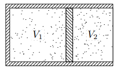

Задача 1. Точков заряд с големина $q$ се движи с ускорение $a$, в следствие на което излъчва електромагнитна вълна с мощност на енергията: $$P = \frac{q^2 a^2}{6\pi\epsilon_0 c^3}$$ където $\epsilon_0$ е диелектричната проницаемост на вакуума, а $c$ е скоростта на светлината във вакуум. Това е така наречената формула на Лармор за пълната мощност, излъчена от ускоряващ се (не релативистки) точков заряд.
1.1. След откриването на електрона от Томсън през 1897 г., той предлага модел на атома, в който електроните се движат в еднородно заредено вещество с такъв положителен заряд, че атомът остава електронеутрален.
Разгледайте атом (в модела на Томсън), за който положително зареденото вещество е кълбо с радиус $r_0$, а единственият електрон в него, в момента $t = 0$, е “закрепен” неподвижно на повърхността на кълбото.
1.1.1. Определете вида на движението на електрона, след като бъде “освободен”. Запишете закона за движението му $x = x(t)$. (2 т.)
1.1.2. Използвайте формулата на Лармор и пресметнете средната мощност $
$, която излъчва електронът, за характерно за системата време $t_0$. Изберете време $t_0 \neq 0$, което да улесни пресмятанията, обосновете отговора си. (2.5 т.)
1.2. Скоро след откритието на Томсън са направени опити, които показват, че неговият модел на атома е грешен. На базата на тези опити Ръдърфорд предлага така наречения “планетарен модел”, в който електроните обикалят около положително заредено ядро, подобно на планетите, обикалящи около Слънцето. В рамките на този модел, разгледайте електрон, който се движи по кръгова орбита с радиус $r$ около неподвижен протон.
1.2.1. Без да отчитате излъчването на електрона получете изрази за пълната енергия $E(r)$ и ускорението $a(r)$ на електрона като функции на радиуса $r$. (1.5 т.)
1.2.2. Използвайте формулата на Лармор, за да определите загубата на енергия Eз за един период на електрона. (0.5 т.)
1.2.3. Пресметнете времето на живот $t_\text{ж}$ на такъв атом, ако знаете, че през цялото време електронът обикаля на орбита, която с добро приближение може да се счита за кръгова. В началния момент радиусът на орбитата е $r_0 = 5.3 \times 10^{-11} \mathrm{~m}$. (3 т.)
1.2.4. Формулата на Лармор е вярна за нерелативистки скорости. Пресметнете радиуса на орбитата, при която скоростта на електрона става $0.1c$. Как ще обясните нарастването на кинетичната енергия, при положение, че електронът излъчва? (0.5 т.)
Полезни константи: $ \epsilon_0 = 8.85 \times 10^{-12} \mathrm{~F/m}$, $c = 3 \times 10^8 \mathrm{~m/s}$, $e = 1.6 \times 10^{-19} \mathrm{~C}$, $m_e = 9.1 \times 10^{-31} \mathrm{~kg}$.
Задача 2.
При движение на тяло във флуид с пренебрежимо малък вискозитет, върху тялото действа сила на съпротивление, която се дава с израза: $$f_C = \frac{1}{2} C_D\rho Sv^2$$ където $C_D$ е безразмерен коефициент, който зависи от формата на тялото и се нарича, коефициент на челно съпротивление. $\rho$ е плътността на флуида, $S$ e площта на проекцията на тялото в равнина, перпендикулярна на скоростта му $v$.
Футболна топка е изритана вертикално нагоре с начална скорост $v_0 = 20 m/s$. След като пада на земната повърхност (твърда бетонова площадка) топката отново отскача вертикално нагоре. Приемете че ударът е идеално еластичен, както и че дебелината на стената на топката е пренебрежимо малка.
Топката има маса $M = 450 \mathrm{~g}$, радиус $r_0 = 10.8 \mathrm{~cm}$ и е напомпана до налягане $\Delta p_0 = 0.6 \mathrm{bar}$. Температурата и налягането на околната среда са съответно $t_0 = 27 \mathrm{^\circ C}$ и $p_0 = 1000 \mathrm{~hPa}$.
2.1. Пресметнете максималната височина $h_{\max}$, на която се издига топката, след като е изритана. При пресмятанията отчитайте съпротивлението на въздуха. (4 т.)
2.2. Оценете максималната температура $T_{\max}$ на въздуха в топката по време на удара в бетоновата площадка. (3.5 т.)
2.3. Оценете времето на удара $\tau$ на топката в площадката. Приемете че налягането в топката остава постоянно по време на удара, както и че между топката и площадката остава тънък слой въздух. (2.5 т.)
Полезни константи: Моларна маса на кислорода $\mu_O = 16 \mathrm{g/mol}$, моларна маса на азота $\mu_N = 14 \mathrm{g/mol}$, считайте, че въздухът е съставен от 21 vol.% O$_2$ и 79 vol.% N$_2$, специфичен топлинен капацитет на въздуха при постоянен обем $c_V = 718 \mathrm{~J/(kg.K)}$, универсална газова константа $R = 8.314 \mathrm{~J/(mol.K)}$, коефициентът на челно съпротивление на топката е $C_D = 0.42$, земното ускорение е $g = 9.8 \mathrm{~m/s^2}$, $1 \mathrm{~bar} = 1 \times 10^5 \mathrm{~Pa}$.
Задача 3
\begin{wrapfigure}{r}{0.25\textwidth}  %\caption{} \end{wrapfigure}
Затворен цилиндър е разделен на две части от подвижно бутало. Във всяка от частите има по един мол двуатомен газ. Околната стена на цилиндъра, лявата му основа, както и буталото са направени от топлоизолиращ материал. Дясната основа на цилиндъра е топлопроводяща (виж фигурата). Обемите на лявата и дясната части са съответно $V_1$ и $V_2$. Газът в дясната част се нагрява много бавно и буталото се премества. Приемете че газът има пет степени на свобода ($i = 5$), както и че буталото се движи без триене.
3.1. Изразете топлинните капацитети $C_1$ и $C_2$ на газа в двете части на цилиндъра при този процес чрез обемите $V_1$ и $V_2$. (6.5 т.)
3.2. Разгледайте случай, в който и лявата основа на цилиндъра е топлопроводяща, всичко друго остава същото като в 3.1. Определете топлинните капацитети $C_1$ и $C_2$, като отново ги изразите чрез $V_1$ и $V_2$. (3.5 т.)
Полезни формули: (за всички задачи)
$\displaystyle \frac{dy}{dt} = \frac{dy}{dx}\frac{dx}{dt}$, $\displaystyle \int x^n dx = \frac{x^{n+1}}{n+1} + C$, $\displaystyle \int \frac{1}{x} dx = \ln x + C$, $\displaystyle \int_{a}^{b} f(x)dx = F(x) |_a^b = F(b) - F(a)$